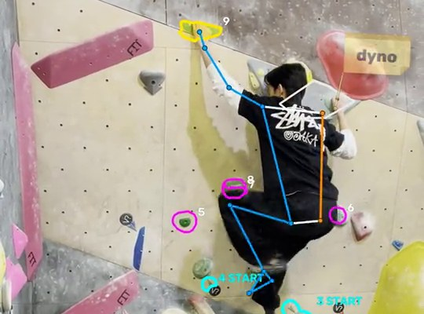

Climbing Analyzer
View →
How I built an app that analyzes my climbing videos, tracking my body and showing which hold each hand and foot is on, even when the camera pans.
Write-ups on how I built things — what worked, what broke, and what I'd do differently.

How I built an app that analyzes my climbing videos, tracking my body and showing which hold each hand and foot is on, even when the camera pans.

How I created a personal desk robot that times my study sessions and keeps me on track.

How I made my own app that acts as a study timer, to-do list and journal all in one, while analyzing my productivity and keeping track of how my days went.